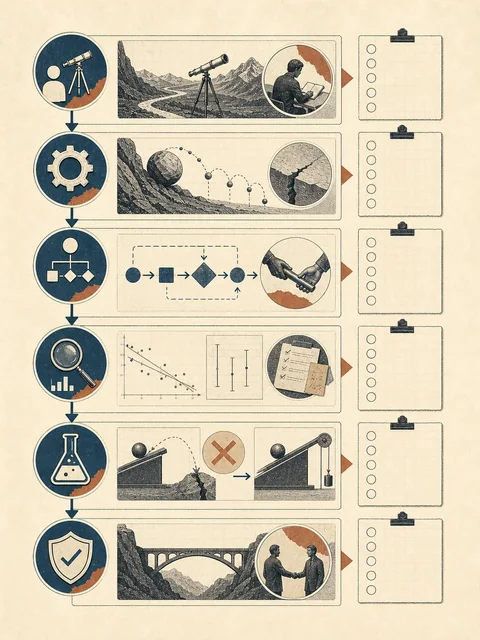
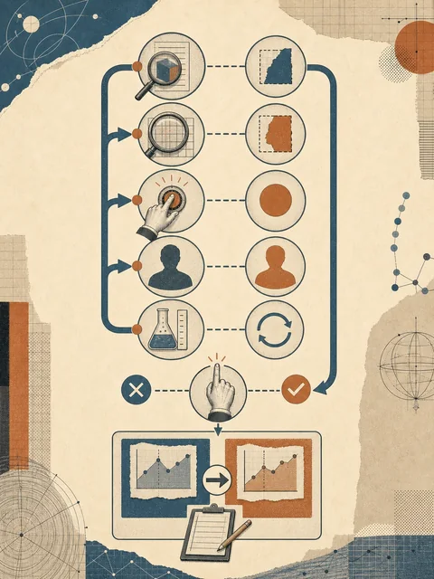

看见结果
两份笔记都有标题、术语和时间位置
展示两周试点留下的结果、失败、修改和边界
 VER. 2608.1
Built with impress.js
VER. 2608.1
Built with impress.js
方案要说明任务、过程证据和责任边界
lecture-notes 两周试点：2 段录音 → 2 份内部笔记
两份笔记都有标题、术语和时间位置
教师复核 12 分钟；损坏音频怎样处理；谁批准访问
v1 合并说话人，v2 增加 speaker 与 unknown 后怎样复测
一份短展示也能完整交代过程和责任

共同标准让不同小组的方案可以在同一张尺子上比较
能否指出使用者、范围、完成标准和一条真实摩擦
能否指出输入、依赖、一个中间产物和一处交接
能否指出验收标准、来源、异常路径和回退动作
能否指出执行者、判断者、批准者、维护者和接管人
能否指出适用条件、一条测试或失败记录，以及一次有证据的修改
评审重点是能否说明判断，而不是堆叠工具名称
反馈要留下观察证据、单一修改和复测条件
v2 已保留未知说话人；对应复用与修改
损坏音频只有“处理失败”，没有保留 04:20–06:10 的时间段
维护者只增加“损坏段必须保留起止时间”的停止规则
重跑损坏样例；通过＝不补写内容，保留时间段并交给教师

听众的任务是让方案作者看到下一步可以改进什么
汇报把分工、证据和修改责任公开给同伴检查
说清假设、证据和仍然不确定的地方
依据共同标准指出可观察缺口，并留下对应证据
选择一条反馈，写明修改位置和负责人，修改方案并保留理由
范围过大，使用者和完成标准不清
来源、日期、冲突或异常没有留下
谁批准、维护和接管没有写出
没有适用条件、测试或退出边界
反馈不能停在“看起来不错”；它要留下观察证据、缺口、修改位置和复测责任
缩小范围或补上使用者和完成标准，并由任务负责人更新任务说明
补检查、异常、停止或人工接管，并由责任人确认新的边界
说明改了什么、谁负责修改，以及用什么输入和标准再看一次
汇报的终点不是被打分，而是知道下一版该改变什么
汇报和互评共同检查方案是否能够承担任务、证据和责任
任务、流程、检查、异常、修改和边界
中间产物、试用、失败记录和接管条件
复述、指出缺口、提出可执行修改
把问题带入完整课程回顾和新情境题
好的互评让方案更清楚，而不是让表达更华丽